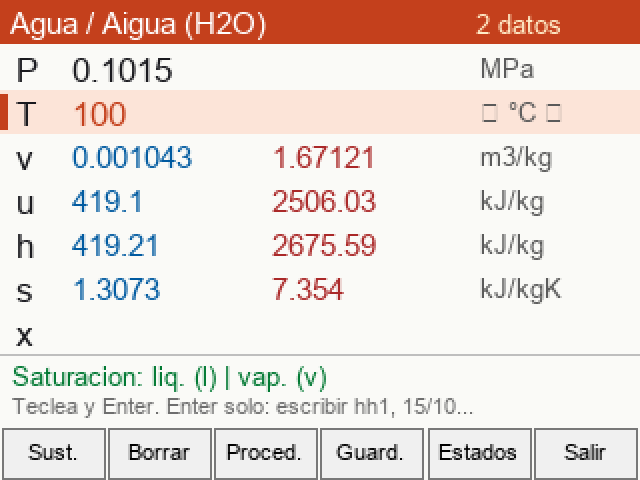
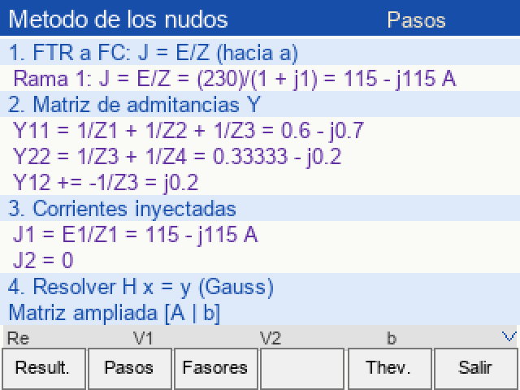
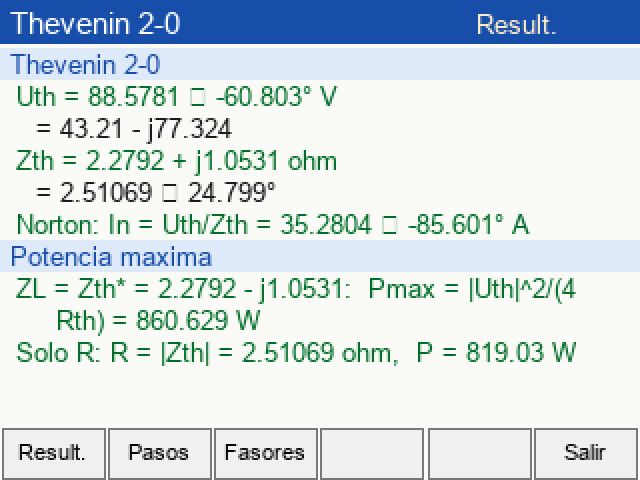
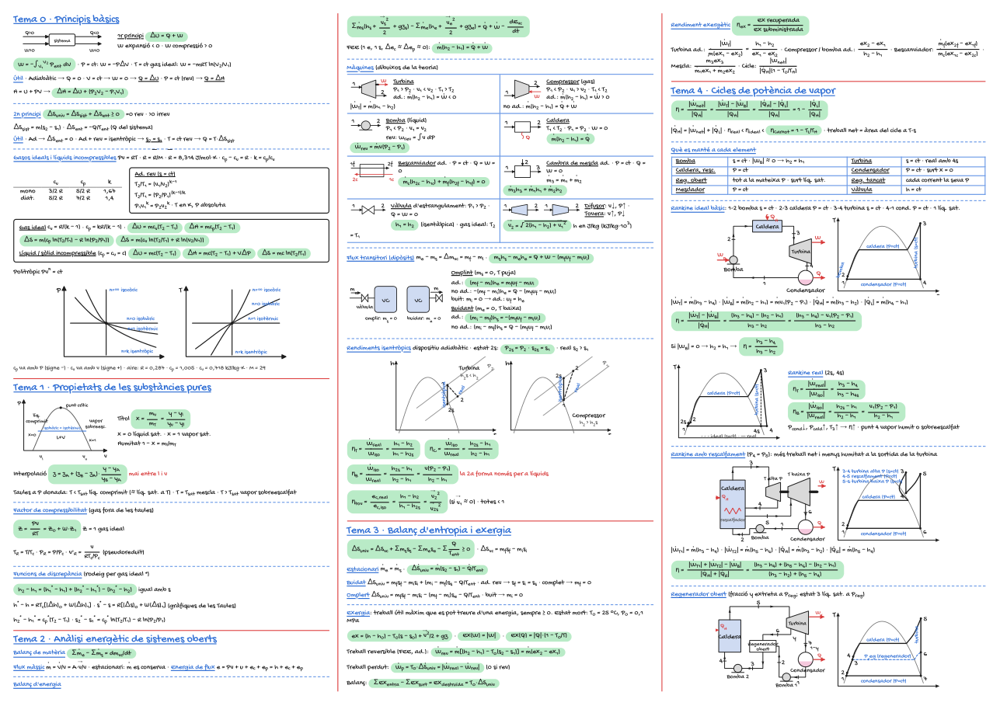
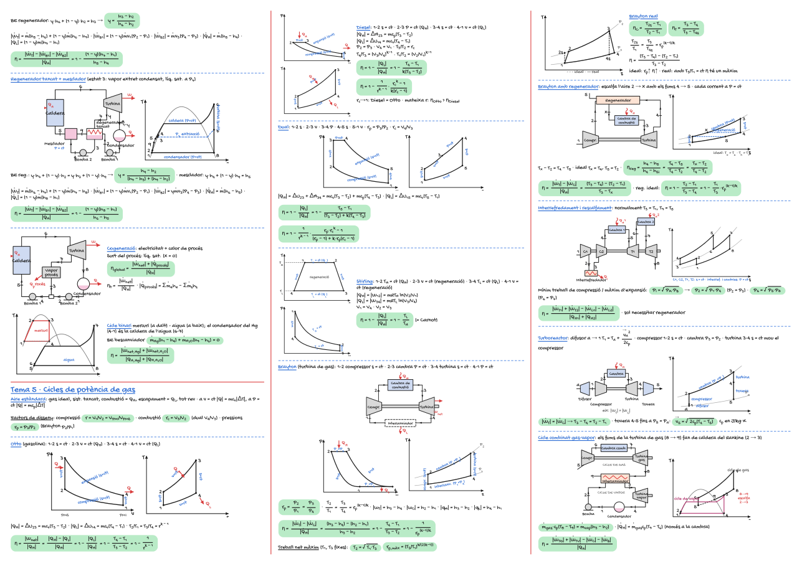
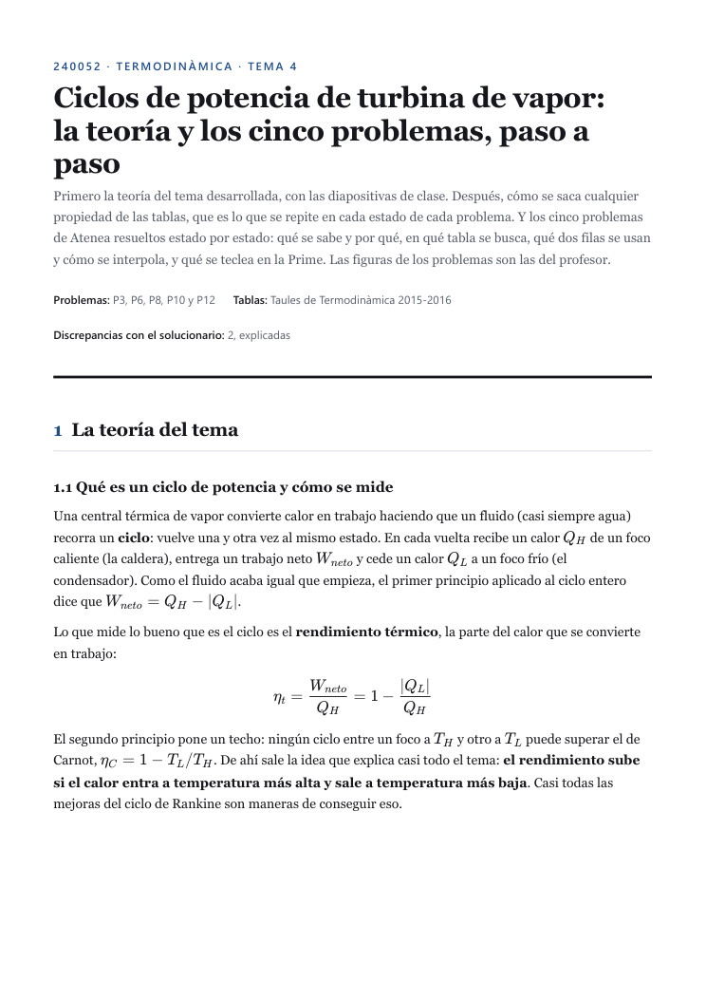
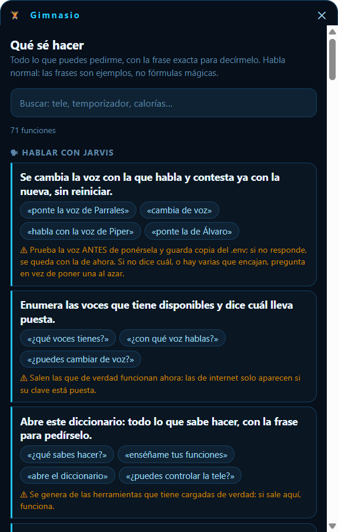

Carlos · proyectos con IA
Estudiante de GETI en la ETSEIB. Proyectos hechos con Claude (Claude Code) desde julio de 2026, cómo está organizado el trabajo y en qué punto está cada uno.
Cómo se trabaja con Claude
Un agente empieza cada sesión sin memoria. Esto es lo que se ha ido montando para que retome el trabajo, no repita errores y no haga cosas que no debe.
Cada sesión
- Lee las instrucciones comunes y las del proyecto
- Lee solo el «estado actual» y la última entrada del log
git logde los últimos 8 cambios
- Busca lo concreto, no explora todo
- Antes de tocar algo que ya falló, lee el registro de errores
- Sigue las reglas del proyecto
- Prueba en la app real con datos reales
- Tests, linter propio, emulador
- PDF revisados como imagen
- Actualiza el estado (máx. 25 líneas)
- Entrada en el log y error nuevo si lo hubo
- Commit explicando qué cambió y qué se probó
Cómo están organizados los ficheros
Qué puede hacer y qué no
| Lo hace solo | Pregunta antes | No lo hace |
|---|---|---|
| Instalar, compilar, ejecutar y probar Commits en cada cambio Descargar material ya autorizado | Borrar algo que no ha mirado Publicar o enviar algo Usar subagentes u otro modelo | Contraseñas, códigos 2FA, datos bancarios Crear cuentas Gastos recurrentes |
Otras piezas
- Memoria: una nota por regla, con el motivo y cómo aplicarla. Unas 50 en el proyecto de la carrera.
- Skills: sincronizar el campus virtual, repasar la clase del día, formularios, repaso semanal, calendario, delegar en Gemini.
- Gemini: para tareas largas, en una copia aparte del proyecto y con un hook que le impide borrar.
- Contexto: herramientas y plugins desactivados en los proyectos donde no se usan.
Proyectos
Programas para la HP Prime
terminados · se usan en los exámenesApps TERMO, ELECTRO y RESOLVER: tablas de vapor y refrigerantes, compresibilidad, ciclos de potencia, circuitos, trifásica y un resolvedor de ecuaciones. Además del resultado, muestran los pasos.



Qué se cambió por el camino
- Linter propio para lo que la calculadora no avisa bien (nombres reservados como
eoi,LOCALde más de 8 variables). - Orden fijo de comprobación: construir → linter → pruebas de estrés → recorrer todas las pantallas → emulador.
- Pruebas en un emulador aparte y en segundo plano, sin tocar la pantalla de Carlos.
- Más de 50 fallos apuntados, cada uno con la regla que dejó. Varios los encontró un compañero probando casos límite.
HP PPL · Python
La carrera (Termodinámica y el resto)
en uso diarioEl material de las seis asignaturas, ordenado para que Claude haga de profesor: repasos de cada clase a partir de los apuntes, ejercicios resueltos con el método de la asignatura y formularios para los exámenes.



Qué se cambió por el camino
- Al principio se daban fórmulas por sabidas. Ahora cada una lleva de dónde sale.
- Cada solución cita el método de la asignatura y va debajo de su enunciado, no al final.
- Los números de estado y las figuras se copian del material del profesor, no se inventan.
- Los esquemas del formulario se dibujan por código y se revisan como imagen hasta que caben.
Claude Code · skills · Python · HTML a PDF
App del gimnasio
en pausa desde septiembre · v0.37Para apuntar el peso de cada máquina y ver si se progresa o no. Luego se añadieron nutrición, planificador, mapa de gimnasios y cuentas en la nube. 37 versiones entre julio y septiembre.


Abrir la app en el navegador (empieza vacía)
Qué se cambió por el camino
- Un fallo del buscador volvía en cada versión. Se resolvió dejando de parchearlo y probándolo fuera de la app.
- De los datos de ejercicios de un repositorio se usaron los textos (licencia MIT), no las animaciones (con copyright).
- Pausada al empezar el curso. Queda unir la última rama con la principal.
JavaScript · Android · Supabase · Cloudflare
Jarvis
primer proyecto · a ratosAsistente de voz para el ordenador. Fue el primero y de él salieron casi todas las reglas de arriba.

Qué se cambió por el camino
- Con unas 60 herramientas, el modelo local pequeño elegía mal. Se redujeron a las necesarias.
- Muchas funciones a la vez acababan en arreglos casi diarios. De ahí el changelog y el registro de errores.
Python · Whisper · Claude + modelos locales